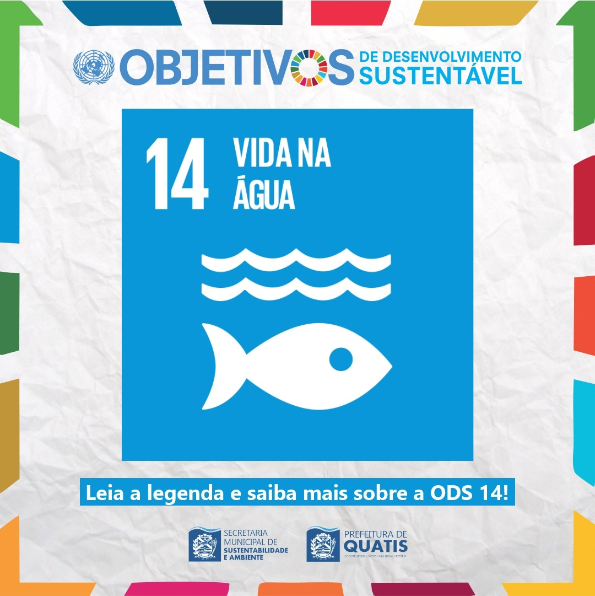

META
A ODS 14 busca conservar e usar de forma sustentável os oceanos, mares e recursos marinhos. Entre suas metas estão: reduzir a poluição dos mares, proteger ecossistemas marinhos e costeiros, combater a pesca predatória, conservar áreas oceânicas, eliminar subsídios que incentivam a sobrepesca e ampliar o conhecimento científico sobre os oceanos. Também incentiva o uso sustentável dos recursos marinhos para beneficiar comunidades costeiras e países em desenvolvimento.


POLUIÇÃO
A falta de cuidado com os oceanos traz graves consequências para o meio ambiente e para a vida humana. A poluição marinha, especialmente por plásticos, ameaça espécies e contamina os alimentos. A pesca predatória e a destruição de ecossistemas como recifes e manguezais reduzem a biodiversidade e prejudicam comunidades costeiras. O aquecimento global e a acidificação dos oceanos alteram o equilíbrio natural da vida marinha. Além disso, derramamentos de óleo e o descarte de substâncias tóxicas causam danos irreversíveis aos mares. Se não houver ações urgentes, esses riscos podem comprometer a saúde dos oceanos e o futuro do planeta.
SOLUÇÃO
Proteger a vida nos oceanos exige ações conjuntas entre governos, empresas e cidadãos. É essencial reduzir o uso de plásticos, tratar corretamente o lixo e evitar o despejo de resíduos nos mares e rios. A pesca deve ser sustentável, respeitando os períodos de reprodução e evitando a captura excessiva de espécies. Investir em educação ambiental e em tecnologias limpas ajuda a preservar os ecossistemas marinhos. Também é importante criar e manter áreas de proteção marinha, combater o aquecimento global e apoiar pesquisas sobre os oceanos. Com atitudes conscientes, é possível garantir um futuro saudável para a vida marinha e para o planeta.